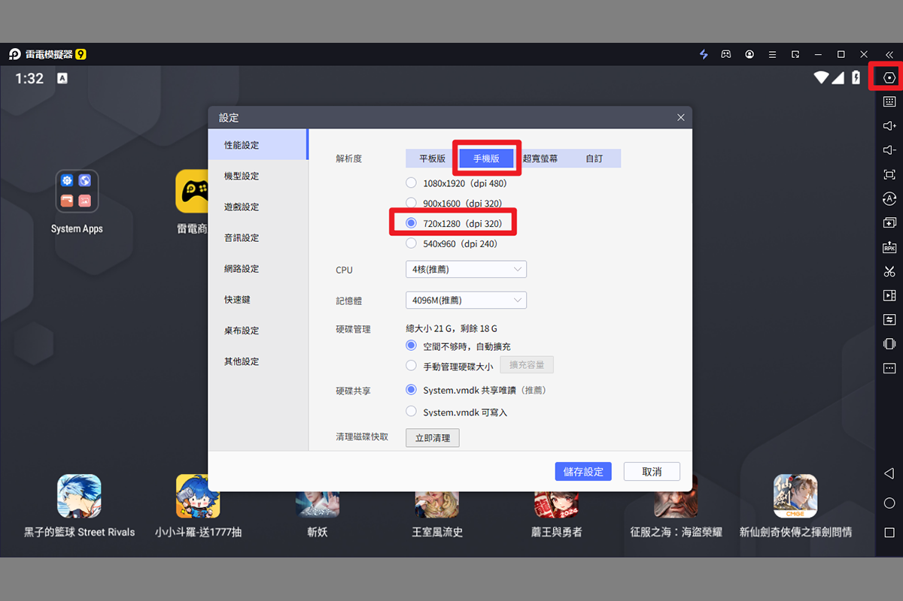
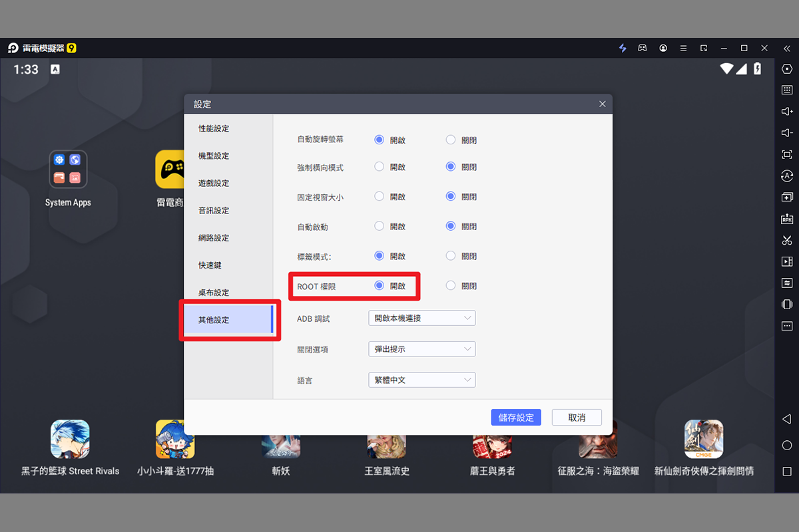
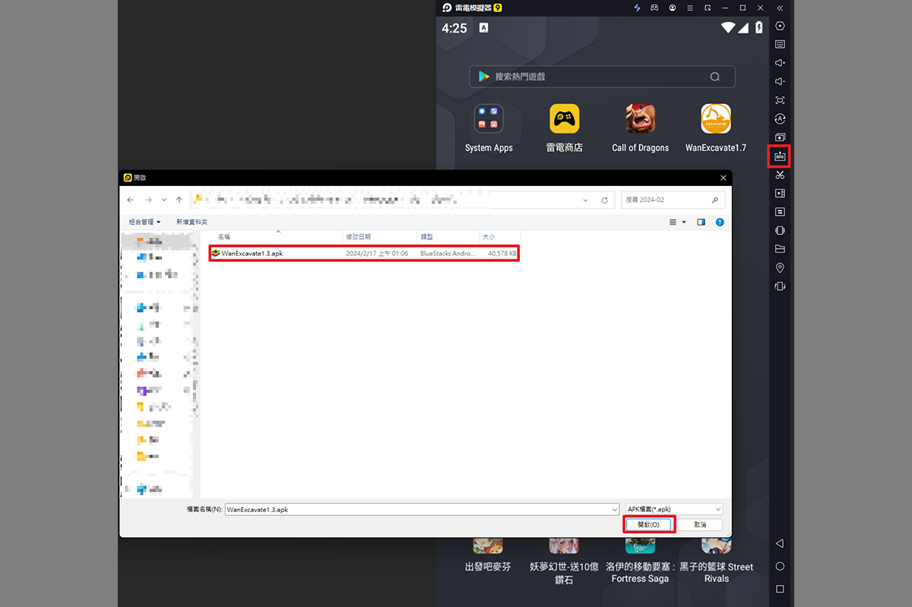
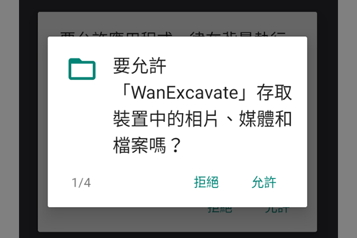
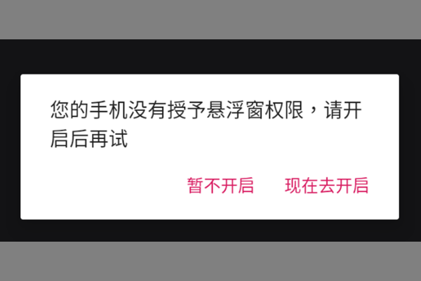
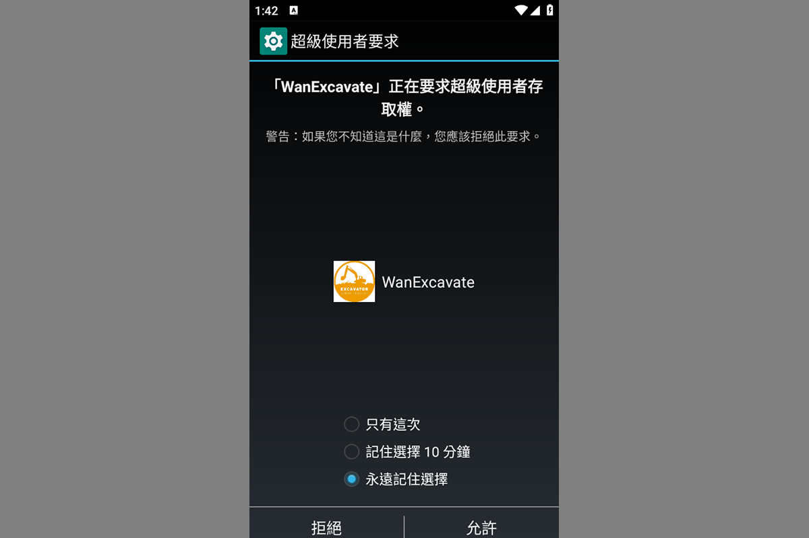
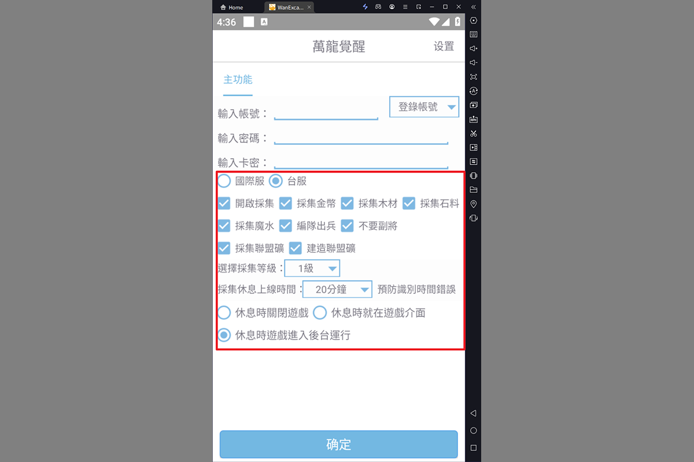
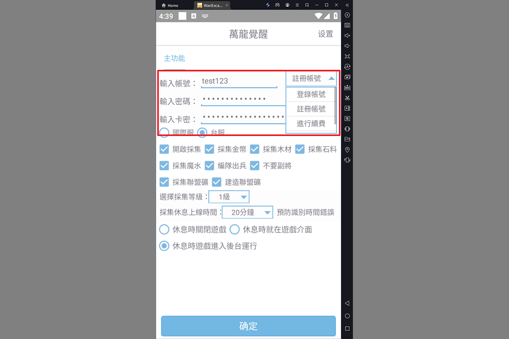
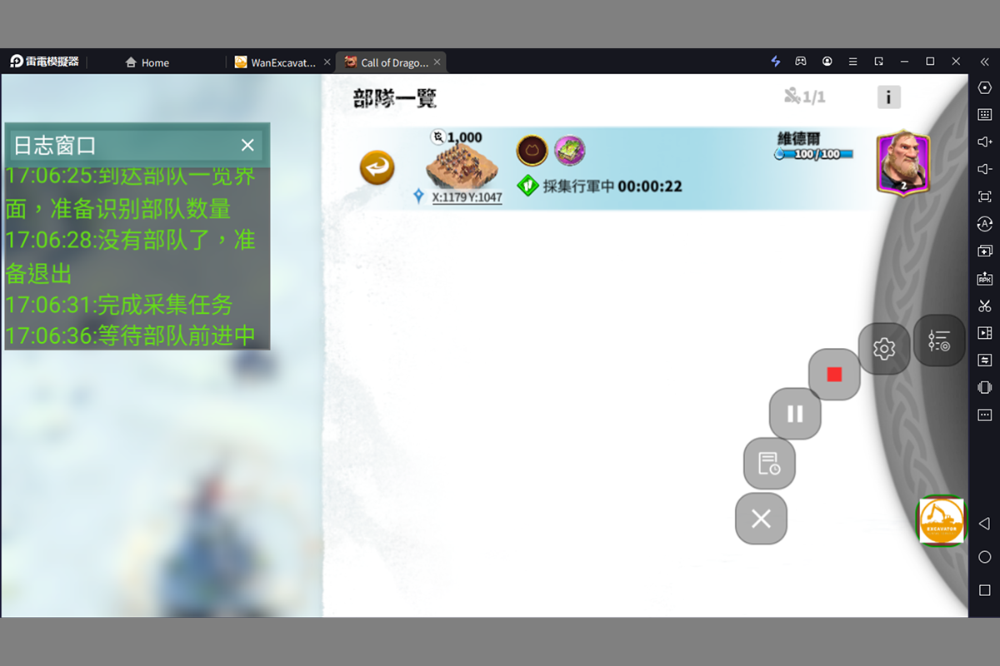

挖掘小助手
輕鬆簡單、快速上手

Step1 : 下載雷電模擬器
想要享受高效能遊戲體驗推薦雷電9
同時多開多個模擬器推薦雷電5
點擊此處下載來電模擬器

Step2 : 設定模擬器解析度
開啟模擬器後點擊右上方設定
將模擬器解析度調整成
手機板720x1280(dpi 320)

Step3 : 開啟ROOT權限
點擊設定中的其他設定
開啟ROOT權限並點擊儲存設定重啟模擬器

Step4 : 安裝挖掘小助手
將從官網下載的挖角小助手apk直接拖移到模擬器視窗中，就會自動安裝挖掘小助手了

Step5 : 給挖掘小助手所有權限
跳出的所有權限要求都點擊允許，並根據引導開啟懸浮視窗權限

Step6 : 給予超級使用者全縣
跳出超級使用者要求時，選擇永遠記住選擇後點允許。

Step7 : 設定啟用的功能
選擇遊戲版本(國際服/台服)，並勾選預啟用的功能以及相關設置。

Step8 : 註冊/登入帳號
輸入您想要申請的帳號與密碼，並切換成註冊帳號，輸入卡密後點擊確定。
*已經擁有帳號的人，只需輸入帳密並改成登入帳號就可以囉
*如果要試用直接選擇進行試用並點擊確定按鈕即可。

挖掘小助手開始運作!
點擊開始後小助手就會開始運作囉!
運作過程中可以透過懸浮視窗來啟用/暫停小助手以及調整相關設定。